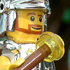
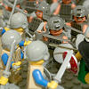
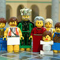

|
|
|
1 Samuel 14
|
|
| 14:1
Now it came to pass upon a day, that Jonathan the son of Saul said unto
the young man that bare his armour, Come, and let us go over to the
Philistines' garrison, that is on the other side. But he told not his
father. |
Slaughter of the Philistines
|
| 14:2
And Saul tarried in the uttermost part of Gibeah under a pomegranate tree
which is in Migron: and the people that were with him were about six hundred
men;
|
| 14:3
And Ahiah, the son of Ahitub, Ichabod's brother, the son of Phinehas, the
son of Eli, the LORD's priest in Shiloh, wearing an ephod. And the people
knew not that Jonathan was gone. |
|
| 14:4
And between the passages, by which Jonathan sought to go over unto the
Philistines' garrison, there was a sharp rock on the one side, and a sharp
rock on the other side: and the name of the one was Bozez, and the name of
the other Seneh. |
|
| 14:5
The forefront of the one was situate northward over against Michmash, and
the other southward over against Gibeah. |
|
| 14:6
And Jonathan said to the young man that bare his armour, Come, and let us
go over unto the garrison of these uncircumcised: it may be that the LORD
will work for us: for there is no restraint to the LORD to save by many or
by few. |
|
| 14:7
And his armourbearer said unto him, Do all that is in thine heart: turn
thee; behold, I am with thee according to thy heart. |
|
| 14:8
Then said Jonathan, Behold, we will pass over unto these men, and we will
discover ourselves unto them. |
|
| 14:9
If they say thus unto us, Tarry until we come to you; then we will stand
still in our place, and will not go up unto them. |
|
| 14:10
But if they say thus, Come up unto us; then we will go up: for the LORD
hath delivered them into our hand: and this shall be a sign unto us. |
|
| 14:11
And both of them discovered themselves unto the garrison of the
Philistines: and the Philistines said, Behold, the Hebrews come forth out of
the holes where they had hid themselves. |
|
| 14:12
And the men of the garrison answered Jonathan and his armourbearer, and
said, Come up to us, and we will shew you a thing. And Jonathan said unto
his armourbearer, Come up after me: for the LORD hath delivered them into the hand of
Israel. |


 (14:12)
(14:12)
"The LORD hath delivered them into the hand of Israel."
God delivers the Philistines into
Jonathan's hand. And his very "first slaughter ... was about twenty
men." Not bad for a first slaughter.
 (14:14) "And that first
slaughter, which Jonathan and his armourbearer made, was about twenty
men." (14:14) "And that first
slaughter, which Jonathan and his armourbearer made, was about twenty
men."
What was Jonathan's first slaughter?
God's 63th Killing

 (14:15) "The earth quaked." (14:15) "The earth quaked."
After Jonathan's first slaughter (20 men in one half acre), God showed his approval with "a very great trembling."
(14:16, 20)
"The multitude melted away, and they went on beating down one another... Every man's sword was against his fellow."
God forces the Philistines to kill each other.
God's 64th killing
|
| 14:13
And Jonathan climbed up upon his hands and upon his feet, and his
armourbearer after him: and they fell before Jonathan; and his armourbearer
slew after him.
|
| 14:14
And that first
slaughter, which Jonathan and his armourbearer made, was about twenty
men, within as it were an half acre of land, which a yoke of oxen
might plow.
|
| 14:15
And there was trembling in the host, in the field, and among all the
people: the garrison, and the spoilers, they also trembled, and the earth
quaked: so it was a very great trembling.
|
| 14:16
And the watchmen of Saul in Gibeah of Benjamin looked; and, behold, the
multitude melted away, and they went on beating down one another.
|
| 14:17
Then said Saul unto the people that were with him, Number now, and see who
is gone from us. And when they had numbered, behold, Jonathan and his
armourbearer were not there.
|
| 14:18
And Saul said unto Ahiah, Bring hither the ark of God. For the ark of God
was at that time with the children of Israel.
|
| 14:19
And it came to pass, while Saul talked unto the priest, that the noise
that was in the host of the Philistines went on and increased: and Saul said
unto the priest, Withdraw thine hand.
|
| 14:20
And Saul and all the people that were with him assembled themselves, and
they came to the battle: and, behold, every man's sword was against his fellow, and there
was a very great discomfiture. |
|
| 14:21
Moreover the Hebrews that were with the Philistines before that time,
which went up with them into the camp from the country round about, even
they also turned to be with the Israelites that were with Saul and Jonathan. |
(14:23)
"So the LORD saved Israel that day."
God saved Israel by forcing Philistines to kill each other.
(14:24-43)
Saul tells his soldiers not to eat anything until he kills all of his enemies, saying that anyone who eats anything is cursed. But his son Jonathan
didn't hear about his father's curse and he ate a bit of honey. So Saul says his son is cursed and must die.
(14:24) "Saul had adjured the people, saying, Cursed be the man that eateth any food until evening, that I may be avenged
on mine enemies. So none of the people tasted any food."
(14:25) "They ... came to a wood; and there was honey upon the ground."
(14:27) "Jonathan heard not when his father charged the people with the oath: wherefore he put forth the end of the rod
that was in his hand, and dipped it in an honeycomb, and put his hand to his mouth; and his eyes were enlightened."
Jonathan’s eyes were enlightened when he ate the forbidden honey. (It was very special honey.)
(14:28) "Then one of the people ... said, Thy father straitly charged the people with an oath,
saying, Cursed be the man that eateth any food this day."
(14:31) "They smote the Philistines that day from Michmash to Aijalon."
Jonathan Is Cursed
|
| 14:22
Likewise all the men of Israel which had hid themselves in mount Ephraim,
when they heard that the Philistines fled, even they also followed hard
after them in the battle.
|
| 14:23
So the LORD saved Israel that day: and the battle passed over unto
Bethaven.
|
| 14:24
And the men of Israel were distressed that day: for Saul had adjured the
people, saying, Cursed be the man that eateth any food until evening, that I
may be avenged on mine enemies. So none of the people tasted any food.
|
| 14:25
And all they of the land came to a wood; and there was honey upon the
ground.
|
| 14:26
And when the people were come into the wood, behold, the honey dropped;
but no man put his hand to his mouth: for the people feared the oath.
|
| 14:27
But Jonathan heard not when his father charged the people with the oath:
wherefore he put forth the end of the rod that was in his hand, and dipped
it in an honeycomb, and put his hand to his mouth; and his eyes were
enlightened.
|
| 14:28
Then answered one of the people, and said, Thy father straitly charged the
people with an oath, saying, Cursed be the man that eateth any food this
day. And the people were faint.
|
| 14:29
Then said Jonathan, My father hath troubled the land: see, I pray you, how
mine eyes have been enlightened, because I tasted a little of this honey.
|
| 14:30
How much more, if haply the people had eaten freely to day of the spoil of
their enemies which they found? for had there not been now a much greater
slaughter among the Philistines?
|
| 14:31
And they smote the Philistines that day from Michmash to Aijalon: and the
people were very faint.
|
| 14:32
And the people flew upon the spoil, and took sheep, and oxen, and calves,
and slew them on the ground: and the people did eat them with the blood.
|
| 14:33
Then they told Saul, saying, Behold, the people sin against the LORD, in
that they eat with the blood. And he said, Ye have transgressed: roll a
great stone unto me this day. |
|
| 14:34
And Saul said, Disperse yourselves among the people, and say unto them,
Bring me hither every man his ox, and every man his sheep, and slay them
here, and eat; and sin not against the LORD in eating with the blood. And
all the people brought every man his ox with him that night, and slew them
there. |
|
| 14:35
And Saul built an altar unto the LORD: the same was the first altar that
he built unto the LORD. |
|
| 14:36
And Saul said, Let us
go down after the Philistines by night, and spoil them until the morning
light, and let us not leave a man of them. And they said, Do whatsoever
seemeth good unto thee. Then said the priest, Let us draw near hither unto
God. |
(14:36)
"Let us ... spoil them until the morning light."
But later, Saul and his army kill all of those who had not already been killed.
|
| 14:37
And Saul asked counsel of God, Shall I go down after the Philistines? wilt
thou deliver them into the hand of Israel? But he answered him not that day.
|
| 14:38
And Saul said, Draw ye near hither, all the chief of the people: and know
and see wherein this sin hath been this day. |
|
| 14:39
For, as the LORD liveth, which saveth Israel, though it be in Jonathan my
son, he shall surely die. But there was not a man among all the people that
answered him. |
|
| 14:40
Then said he unto all Israel, Be ye on one side, and I and Jonathan my son
will be on the other side. And the people said unto Saul, Do what seemeth
good unto thee. |
|
| 14:41
Therefore Saul said unto the LORD God of Israel, Give a perfect lot. And
Saul and Jonathan were taken: but the people escaped. |
|
| 14:42
And Saul said, Cast lots between me and Jonathan my son. And Jonathan was
taken. |
|
| 14:43
Then Saul said to Jonathan, Tell me what thou hast done. And Jonathan told
him, and said, I did but taste a little honey with the end of the rod that
was in mine hand, and, lo, I must die. |
(14:43)
"I did but taste a little honey ... and, lo, I must die."
|
| 14:44
And Saul answered, God do so and more also: for thou shalt surely die,
Jonathan. |
|
| 14:45
And the people said unto Saul, Shall Jonathan die, who hath wrought this
great salvation in Israel? God forbid: as the LORD liveth, there shall not
one hair of his head fall to the ground; for he hath wrought with God this
day. So the people rescued Jonathan, that he died not. |
|
| 14:46
Then Saul went up from following the Philistines: and the Philistines went
to their own place. |
|
| 14:47
So Saul took the kingdom over Israel, and fought against all his enemies
on every side, against Moab, and against the children of Ammon, and against
Edom, and against the kings of Zobah, and against the Philistines: and
whithersoever he turned himself, he vexed them. |
War on all sides
|
| 14:48
And he gathered an host, and smote the Amalekites, and delivered Israel
out of the hands of them that spoiled them.
|
| 14:49
Now the sons of Saul were Jonathan, and Ishui, and Melchishua: and the
names of his two daughters were these; the name of the firstborn Merab, and
the name of the younger Michal: |
(14:49) "Now the sons of Saul were Jonathan, and Ishui, and Melchishua."
Who were Saul's sons?
Philistines Try to Keep Weapons Out of Hands of Israelites
|
| 14:50
And the name of Saul's wife was Ahinoam, the daughter of Ahimaaz: and the
name of the captain of his host was Abner, the son of Ner, Saul's uncle.
|
| 14:51
And Kish was the father of Saul; and Ner the father of Abner was the son
of Abiel.
|
| 14:52
And there was sore war against the Philistines all the days of Saul: and
when Saul saw any strong man, or any valiant man, he took him unto him.
|
|